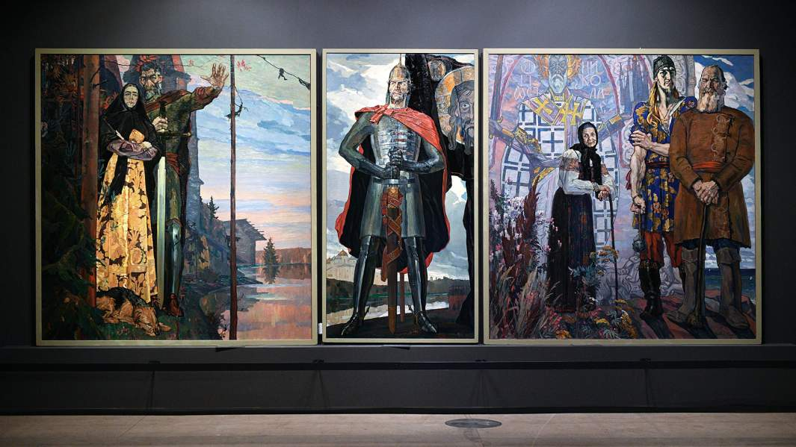
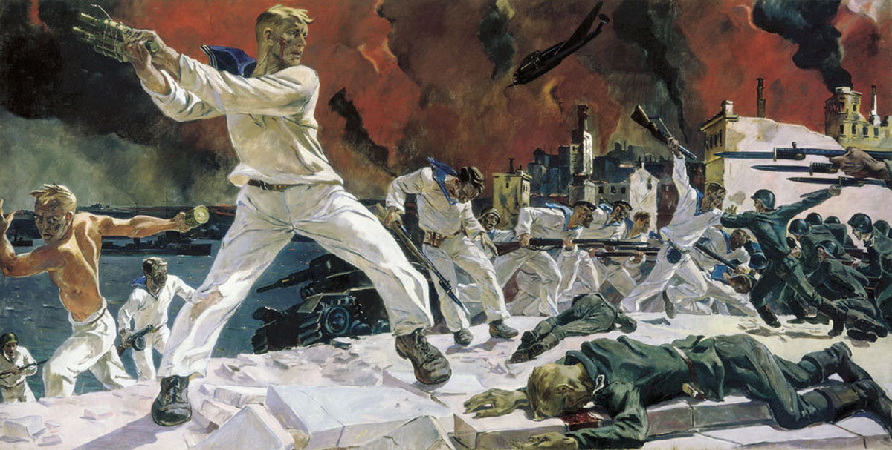
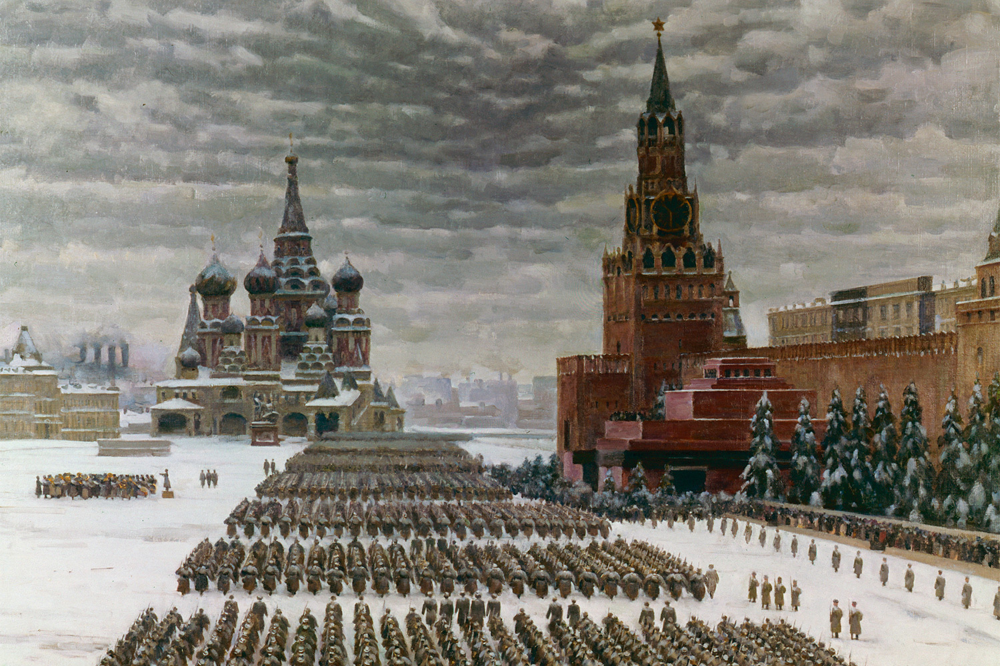

Живопись
«Александр Невский»
Автор: Павел Корин
Дата создания: 1942–1943 годы
Техника: Масло, холст. Триптих (центральная часть — 275×142 см, боковые — 275×95 см)

Описание: Монументальный триптих, созданный в разгар Сталинградской битвы. В центре — князь Александр Невский в полный рост, с мечом и знаменем, за ним — Софийский собор в Новгороде. Слева — «Северная баллада» (народ собирается на войну), справа — «Старинный сказ» (прощание с павшим воином). Корин писал картину в эвакуации в Самарканде, но замысел родился в Москве осенью 1941 года, когда немцы стояли под столицей. Идею лично одобрил Сталин: «В тяжёлое время пусть напомнит о великих победах прошлого».
Особенности экспоната: Князь изображён не как средневековый воин, а как былинный богатырь в кованых доспехах XX века. Меч в его руке — точная копия оружия XIII века, найденного при раскопках. Картина стала символом: «Кто придёт к нам с мечом, от меча и погибнет». Репродукции отправляли на фронт вместо открыток. Сам художник в 1942 году выезжал на передовую — делал зарисовки солдат, которые потом появились на боковых частях триптиха.
«Оборона Севастополя»
Автор: Александр Дейнека
Дата создания: 1942 год
Техника: Масло, холст. 200×400 см

Описание: Одна из самых экспрессивных батальных картин войны. На переднем плане — бой в полный рост, в упор, почти кинематографично. Матросы в белых бескозырках идут в рукопашную атаку на фоне горящего города. Дейнека не был на фронте, но создал картину по газетным сводкам и фотографиям. Главное в ней — не хроника, а состояние: ярость, решимость, человек на пределе сил. Горизонтальный формат, где бой разворачивается слева направо, как свиток древней битвы. Картина писалась в Москве, в мастерской на Мясницкой, за 6 месяцев.
Особенности экспоната: Все матросы на картине — собирательные образы, кроме одного: центральный фигура с гранатой списана с реального защитника Севастополя, фотографии которого Дейнека случайно увидел в газете «Правда». Художник использовал контраст: чёрные силуэты моряков на белом фоне атаки. Когда картину впервые выставили в 1943 году, ветераны севастопольских боёв узнавали свои блиндажи и Малахов курган. Изначально картина называлась «Выбивают фашистов из Севастополя», но название изменили после освобождения города в 1944-м.
«Парад на Красной площади 7 ноября 1941 года»
Автор: Константин Юон
Дата создания: 1942 год
Техника: Масло, холст. 132×196 см

Описание: Полотно запечатлело исторический парад, когда с него войска уходили прямо на фронт — всего в 30 км от Москвы. Юон изобразил момент, когда Сталин произносит речь над мавзолеем, а снег покрывает брусчатку, танки, пехоту. За спинами — Собор Василия Блаженного, Спасская башня, небо в тяжёлых тучах. Картина не просто документальна — она пропитана ощущением: «Мы победим, потому что мы здесь, в сердце России». Художник сам был свидетелем парада (находился на трибуне вместе с дипломатами) и делал наброски прямо во время мороза.
Особенности экспоната: На полотне около 900 фигур, каждую Юон прописал с натуры — позировали курсанты военных училищ, солдаты с запасных позиций. Интересно, что изначально картину заказало издательство «Искусство» для плаката, но масштаб вырос в монументальное полотно. Сталин, увидев готовую работу в 1943-м, потребовал убрать охрану НКВД с заднего плана — так на картине появились только колонны войск. Белый дым из труб на заднем плане — это не дефект, а маскировка заводов, которую применяли зимой 1941/42 года. Репродукции развешивали в госпиталях, чтобы раненые помнили: столица выстояла.